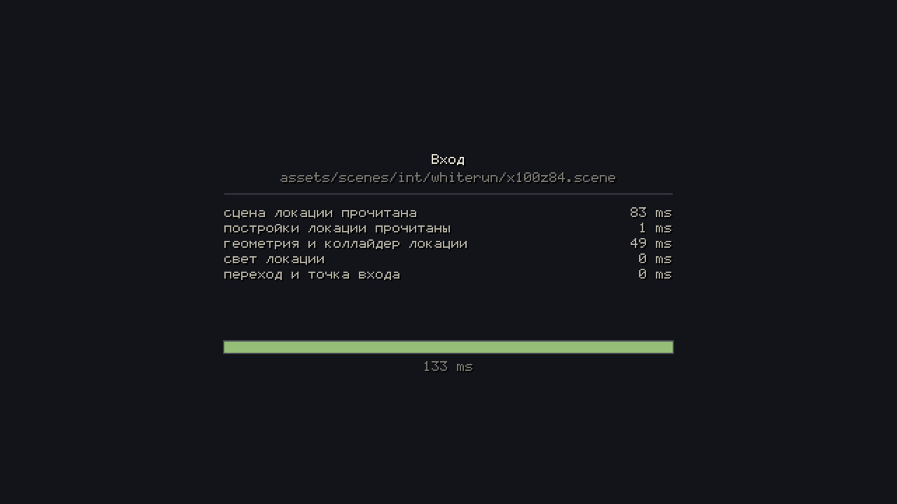
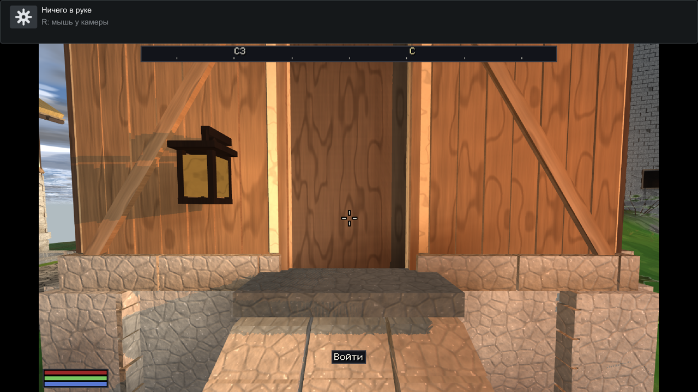
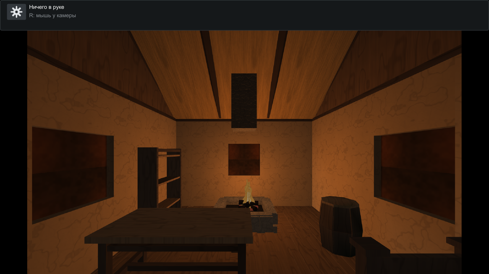
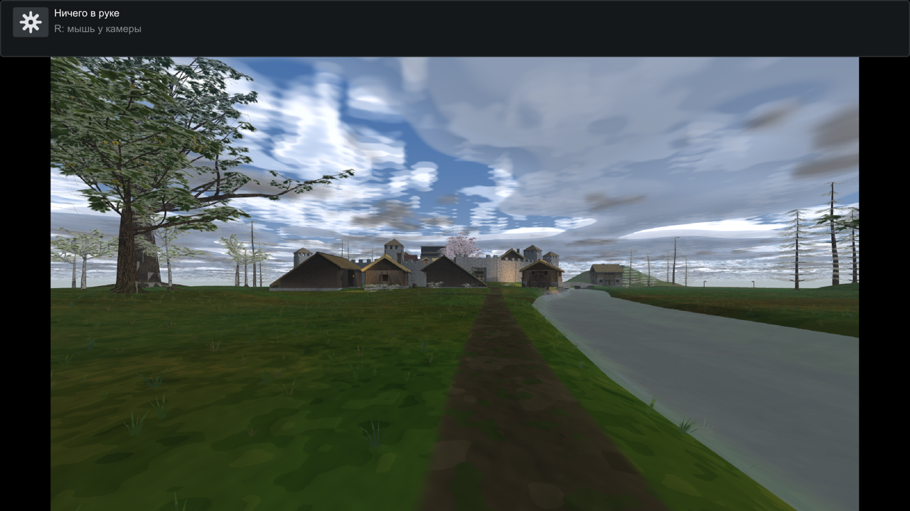

Интерьеры-локации: волна А
Пилот-дом у рынка Вайтрана. Механика доказана на одном доме — если бы не вышла здесь, не вышла бы и на 5500.
houses/wr-int), и копия выпускается скриптом, а не руками, —
чтобы не протухнуть молча, когда конвейер перевыпустит город.
Как войти в дом руками
- Запустить
build_lead/engine/app/dfn_app. - В меню выбрать карту «Вайтран: пилот интерьера (И15)»
(категория houses). Быстрее — минуя браузер:
DFN_OPEN_MAP=houses/wr-int ./build_lead/engine/app/dfn_app
- Дойти до дома у рынка: он стоит на мировых координатах (100.0, 83.8), дверь смотрит на юго-восток, точка двери — (103.9, 36.3, 88.9).
- Встать на крыльцо и навести прицел на закрытую створку. Внизу кадра появится подсказка «Войти».
- Нажать E. Экран загрузки, и вы внутри.
- Внутри развернуться к двери, навести прицел — подсказка «Выйти», снова E. Вы на том же месте, откуда вошли.
Створка теперь настоящая стена: сквозь дверной проём больше не пройти, внутрь ведёт только переход. Это и есть «инверсия коллайдера двери» — у дома без внутренности всё осталось как было.
Без рук (для кадров и замеров)
# открыть карту СРАЗУ внутри локации DFN_OPEN_MAP=houses/wr-int \ DFN_INTERIOR=assets/scenes/int/whiterun/x100z84.scene \ DFN_INTERIOR_FADE=0 DFN_LOAD_LOG=1 DFN_SHOT_AFTER=40 \ ./build_lead/engine/app/dfn_app # ...и выйти наружу через 20 кадров (так меряется время выхода) DFN_INTERIOR_EXIT=20 ...
DFN_INTERIOR_FADE=0 убирает экран загрузки совсем — два
прогона тогда дают побитово сравнимые кадры.
Кадры

DFN_LOAD_LOG. Снят прогоном с
DFN_INTERIOR_FADE=1.0; штатная длительность 0.15 с, ноль
выключает экран совсем.


Замеры
| величина | цель | замер |
|---|---|---|
| вход в локацию (три прогона) | ≤ 500 мс | 52.6 / 54.2 / 55.3 мс |
| выход наружу (три прогона) | ≤ 50 мс | 0.01 / 0.01 / 0.02 мс |
| загрузка города (для масштаба) | — | 19 555 мс |
С показанным экраном вход стоит дороже на цену его первого кадра
(133 мс при DFN_INTERIOR_FADE=1.0): экран рисует полный кадр
города до того, как начнёт читаться локация. Цель свода — «вход ≤ 0.5 с БЕЗ
экрана», и числа выше сняты при DFN_INTERIOR_FADE=0.
Выход почти бесплатен потому, что город не выгружался, а геометрия локации остаётся залитой: повторный вход в тот же дом по той же причине тоже почти бесплатен.
upload_house_mesh).
Раньше это число приписывалось «миру и рассеву»: строки прибора называли
предыдущий этап. Привязка исправлена и проверена.
Приёмка
Прибор dfn_interior_check мерит пять рук свода: проходимость
капсулой игрока, мебель на полу, достижимость перехода, бюджет огня и
парность ссылок «дом ↔ локация ↔ обратная дверь».
| доза | что это | находок |
|---|---|---|
| interiors_pilot_clean | верная локация пилота | 0 (ровно) |
| interiors_broken_fixture | нарочно испорченная локация | 4 (ровно) |
Второй тест существует потому, что у этих рук на верной локации только
отрицательное плечо — находок ноль по построению, — а молчание прибора
неотличимо от прибора неработающего. В
assets/scenes/int/broken.scene заложены ровно четыре дефекта, по
одному на руку, и приёмка обязана назвать все четыре и ни одного сверх:
РУКА 1 — до «furn-table» на (1.90, 1.45) от [spawn] не дойти: путь перекрыт РУКА 2 — «furn-barrel» на (3.95, 4.95) НИЖЕ пола на 0.52 м РУКА 5 — переход 0 на (5.60, 3.00) недостижим от [spawn]: дверь за стеной РУКА 7 — настоящих [light] 9, бюджет 8
Дозовая пара: запечатана ли оболочка
Та же испорченная локация, один бинарник, отличие ровно в проверяемом:
| створка | что видит приёмка | находок |
|---|---|---|
portal=1 (запечатано) |
переход за стеной НЕдостижим | 4 |
| без флага (как было) | переход достижим через дверной проём | 3 |
Пять поправок свода, купленных замерами
- Сетка проходимости 0.25 → 0.05 м. Проба стоит в центре ячейки, поэтому сетка разрешает не ширину прохода, а ширину полосы допустимых центров. В доме у рынка проход между столом и кроватью 0.80 м при капсуле 0.70 — полоса центров 0.10 м, и сетка 0.25 её просто не видела.
- Полоса препятствий отсчитывается от пола под ячейкой, а не от ног спавна и не одним числом на комнату: половая доска лежит с пазами, и одиночная проба нашла дно паза вместо верха доски.
- Опора предмета — пол или верх другого предмета, но не выше самого предмета: иначе пламя висит, а очаг «утоплен» — под ним оказывается пламя, стоящее на нём.
- Подошва предмета — начало его чертежа, а не низ его треугольников: у очага топка утоплена намеренно.
- «Кровать поперёк прохода» — не дефект проходимости в этом наборе. Замер: кровать это матрас 0.42 м (ниже шага игрока 0.45) и четыре столбика с просветом 0.64 м. По ней ходят. Барьер оснастки построен из полок.
Что осталось волне Б
- Стадия 14а генератора города: выпуск локаций для всех домов с
назначением, дозовая пара
DFN_CITY_INTERIORS=0/1. - Параметр
side(наружная/внутренняя часть детали) — после И3. - Запечатывание боевого Вайтрана и «окно горит по правде».
- Слаг локации от чертёжных координат с падением вслух при столкновении.
- Проходимость убранства как правило генератора. Волна А измерила один дом; 26 домов той же плотности не проверены, а поправка 5 выше говорит, что дефект такого рода бесшумен.
- Переезд
interior=из копии карты в боевой Вайтран.
Свод зоны — docs/plans/INTERIORS_I15.md.
Приёмка — ctest -R interiors. Выпуск пилота —
python3 tools/make_interior_pilot.py.